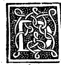

CAPITEL II¶
Vom Abstand des Profils zum Hinterhauptbein besagten Kopfes, d. h. zum Punkte a, welchen man Hinterhauptbein nennt, und von den Theilen, welche dazwischen liegen, Auge und Ohr.

Nachdem vom Profil des menschlichen Kopfes und seinen vornehmlich erforderlichen Theilungen gesprochen, so werden wir in Folgendem sprechen von den Verhältnissen des Auges und Ohres. Damit man dieserhalb verstehe, was wir sagen, so werden wir zuerst auf die gleiche Art die Breite des vorgelegten Tetragons sk in drei gleiche Theile theilen, wie es mit seiner Länge geschehen. Und nachdem ms in drei gleiche Theile zerlegt, so sei der eine mo, der andere oq, der dritte qs. Und sodann werden wir zu grösserer Deutlichkeit für euch jedes dieser Drittel in zwei gleiche Theile theilen, und zwar in den Punkten n, p, r. Und jeder von ihnen ist der sechste Theil der ganzen angegebenen Breite ms.
Und diese werden wir nochmals in zwei andere Hälften zerlegen können, und das würden Zwölftel des Ganzen sein, und diese wiederum in zwei andere gleiche Theile und jeder würde der 24. Theil des Ganzen sein. Und so könnten wir fortschreiten, soweit es uns gefällt, indem wir sie in uns bekannte Theile je nach grösserer oder geringerer Breite zerlegen. Und je mehr Theile bekannt sind, um so bequemer ist es für den Perspectiviker, weil sich dadurch mit dem Auge besser die Grösse des Gegenstandes erfassen lasst, den man darstellen will, sei es Kopf, oder sei es, was man sonst will, wie Thiere, Bäume, Gebäude.
Und zu diesem Zwecke haben sich die Maler ein gewisses Viereck oder verlängertes Tetragona) gebildet, das mit vielen feinen Citersaiten oder Seide oder grosse und kleine Sehnen durchzogen, wie es ihnen bei den Werken angemessen scheint, die sie in Leinwand auf Tafel oder Mauer zu entwerfen haben.
Nachdem dabei der Künstler besagtes Te-Rechteck. tragon über die eigentliche Form gestellt, und dasselbe wohl befestigt, so dass es auf keine Art wackeln kann, zwischen sich und den Gegenstand den er abzubilden beabsichtigt, welcher Gegenstand je nach der Lage, wie man sie machen will, ebenfalls wohl befestigt sein muss, so schickt er sich darauf an, gerade zu stellen, knieend, wie es ihm am besten accomodirt zu stehen scheint und indem er mit seinem aufmerksamen Auge bald hier, bald dort jenen Gegenstand anblickt, betrachtet er die Grenzen jener Fäden, wie sie der Länge und der Breite nach über besagten Gegenstand entsprechen.
Und so schicken sie sich an, dieselbe mit ihrem Stift auf dem Blatt oder sonstwo aufzuzeichnen, indem sie die kleinen Quadrate besagten Tetragons der Zahl und Grösse nach grösser oder kleiner nach jenem proportioniren, und bilden so aus dem Rohen heraus ihre Figuren, die sie nachher mit der Anmuth des Gesichts bekleiden. Und dies Instrument wird von ihnen Netz genannt; wie ihr hier am Kopfe seht, von welchem Instrumente ich mich hier nicht kümmere eine andere Form aufzustellen, da nach dem Gesagten sein Verständniss leicht ist.
Nun zu unserem Gegenstande, dem Kopfe zurückkehrend, so werdet ihr finden, dass das Auge mit den obern und untern Brauen der Augenlider gewöhnlich ein Sechstel des ganzen Profils mb hoch sei, was ich nicht mit Linien zu verdunkeln mich gekümmert, aber ihr werdet es mit eurem Zirkel leicht finden, und ebenso breit. Hinsichtlich des Ohrs, wenn ihr gut darauf achtet, werdet ihr finden, dass es so hoch wie die Länge der Nase, d. h. ein Drittel des besagten Profils und ein Sechstel der Breite besagten Tetragons ms ist, und seine grösste Ausdehnung ist diametral zwischen dem Hinterhauptbein und Nasenrücken, gerade über der Kathete a, die unterhalb an der Nasenspitze und dem Anfang der Wange endigt.
Der Hals ist zwei Drittel besagter Breite ms, d. h. so dick wie OS, und ebensoviel entspricht dem Abstände von der Spitze der Brust zum Kehlkopfknoten. Der Hinterkopf, d, h. nach unserer Weise der hintere Schädelknochen, überschreitet besagte Breite gràde um zwei Drittel seines sech.sten Theils d. h. um ein Neuntel der ganzen ms. Der Scheitel, d. h. der Gipfel des Kopfes überschreitet die Wurzel der Haupthaare um ein Sechstel besagter ms in Höhe, nämlich bis zum Punkte p, welcher seine Mitte ist.
Die andern Theile nehmen sodann in ihrem Umkreise proportinai von p nach o n in dem Winkelpunkte des Tetragons nach vorn, und ebenso rückwärts von genannten p nach qrs proportional ab, mit jener Anmuth und Gutdünken, die beim Kinn und Haarwurzeln nach ihnen als irrationale Proportionen bezeichnet, d. h. als unnennbar durch irgend eine Zahl und ihre genauen Theile.
Und dies mochte ich hinsichtlich des ganzen Kopfes oder Hauptes genug sein lassen und wir werden nun fortfahrend vom besagten Kopf, seinem angemessenen Verhältnisse zum ganzen Körper und seinen andern äussern Gliedern sprechen, damit ihr demgemäss eure Arbeiten besser gestalten könnt.